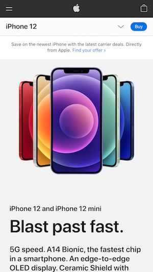

White Space
Brigham Young University
The mobile app from BYUs home page uses white space. As you scroll down the items gives good spacing. The spacing looks pleasing to the eye and does not look too clumped or too spaced out.
Visual Hierarchy
Rocket League
The mobile app from BYUs home page uses white space. As you scroll down the items gives good spacing. The spacing looks pleasing to the eye and does not look too clumped or too spaced out.
Alignment
Apple
The mobile app from BYUs home page uses white space. As you scroll down the items gives good spacing. The spacing looks pleasing to the eye and does not look too clumped or too spaced out.
